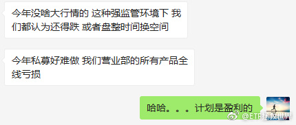

为什么说十年呢。因为我第一次感觉自己有这个问题，是2007年。那时候有个叫沙 黾 农的，可能是当时新浪博客力推的吧。总之粉丝特别多，他就在一路说黄金十年，几万点。最高点也是，08年也是，结果当然不用说。当时我就非常气愤，都不看看数据吗？然而当时有种无力感，就是没人听你在说什么，更没人信你@ETF拯救世界:有没有懂心理学的朋友帮我分析一下我的症状：为什么我看到那些猛吹热门股，猛吹几年已经涨了几十倍上百倍还能再涨无限倍的人总是特别厌恶，特别特别不喜欢。包括大盘。明明已经涨到天上奇贵无比了还要吹黄金十年。这个症状可能已经有十年了。我自己觉得可能是一种心理疾病，有没有懂的帮我分析分析。
有没有懂心理学的朋友帮我分析一下我的症状：为什么我看到那些猛吹热门股，猛吹几年已经涨了几十倍上百倍还能再涨无限倍的人总是特别厌恶，特别特别不喜欢。包括大盘。明明已经涨到天上奇贵无比了还要吹黄金十年。这个症状可能已经有十年了。我自己觉得可能是一种心理疾病，有没有懂的帮我分析分析。
还挺听话的。第一调整目标位10500吧。悠着点才对啊。//@ETF拯救世界:我觉得是不是应该调整调整了。这么拉上去不是事儿啊。//@ETF拯救世界:今天大概率继续光头，温和放量，可以说很舒服了。//@ETF拯救世界:A股就是这样，炒什么都是一把到底。简单粗暴，不讲节奏。@ETF拯救世界:$全指医药 sh000991$ 又内什么了。千万别内什么。
回复@你说吧___:我觉得不会。第三轮是从2015年7月初开始的，我公布的是长线投资计划，我自己还做了各种其他投资。比如分级A当时几个月赚了几十个点。如果我做私募，从2015年7月至今，收益率至少在70%以上。我很难相信这样的几乎不回撤，收益率又高的还要被喷。另外，评价一个组合，还是要经过一轮牛熊@ETF拯救世界:感受一下。 
回复@没人知道我是谁2011:你知道为什么很多人能在房子上赚钱吗。因为房子交易太麻烦了。如果房子也是有个市场每天开盘，点一下就卖出，90%的人拿不住非自住房。//@没人知道我是谁2011:是啊，所以我尽量买场外，感受区别太大了，这好像有生理上的原因。@ETF拯救世界:总是忍不住卖掉上涨品种的朋友，我告诉你一个秘诀：下次买场外基金试试。眼不见为净。
我觉得是不是应该调整调整了。这么拉上去不是事儿啊。//@ETF拯救世界:今天大概率继续光头，温和放量，可以说很舒服了。//@ETF拯救世界:A股就是这样，炒什么都是一把到底。简单粗暴，不讲节奏。@ETF拯救世界:$全指医药 sh000991$ 又内什么了。千万别内什么。